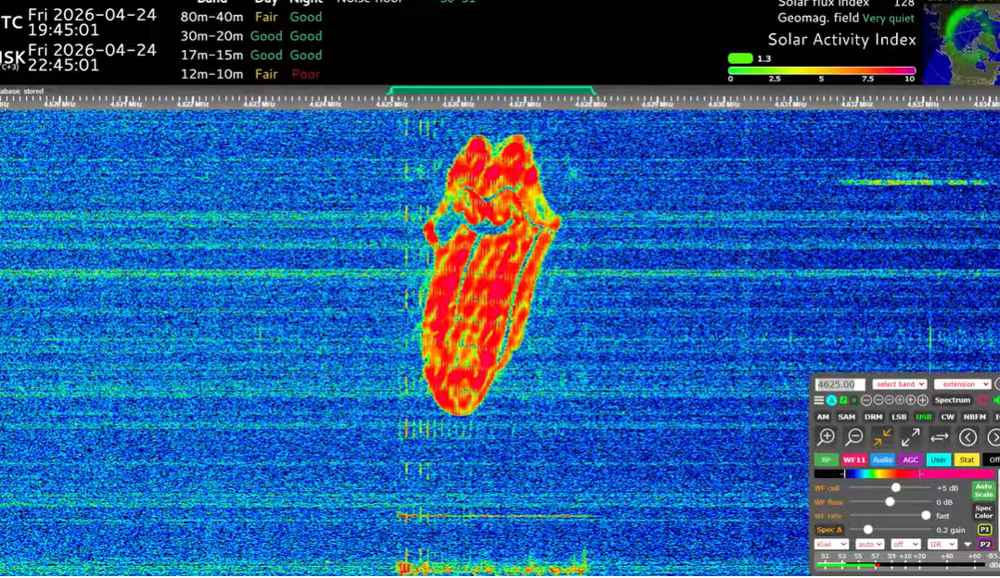

datum
Ez a mai wtf cikk:
Kalózok csaptak le a buzzerre.
Az uvb-76 egy gyakran szellemrádiónak nevezett régi orosz kommunikációs csatorna. Általában búgó hangot ad, de néha orosz üzenetek szólalnak meg rajta. Tegnap este viszont nem orosz kémek jelentései hanem zenék és spektrogrammra írt szöveges üzenetek. Ezt az eseményt tudomásom szerint a rádió zand nevű rádiós csoport csinálta akik több youtube live chatjén is ott voltak. (Ez az event masszív volt.) A zenén kívül érdekesség hogy bejáttszották a 2010-es egyik híres rádióüzenetet is. Hogy ezzel zavartak e valamilyen valós kommunikációt az még ködsös. (Lehet már megy értük az orosz TEK)




Ennyi is lett volna a zandról szóló napiwtf-em. Remélem tettszett. Csá XD